雲以外の大気現象(セクション3.0)-水大気現象＆塵大気現象-
目次
- 雲以外の大気現象の分類と記号(セクション3.1)
- 地表面からの雲以外の大気現象の観測(セクション3.3) はじめに
- 雲以外の水大気現象(セクション3.1.1)
- 分類
- 雲以外の水大気現象の観測(セクション3.3.2)
- 大気中に浮遊する粒子からなる水大気現象(セクション3.2.1.1)
- 降下する粒子の集合（降水）からなる水大気現象(セクション3.2.1.2)
- 風によって吹き上げられる粒子の集合からなる水大気現象(セクション3.2.1.3)
- 粒子の沈着からなる水大気現象(セクション3.2.1.4)
- 粒子の渦からなる水大気現象（竜巻等）(セクション3.2.1.5)
- 塵大気現象(セクション3.2.2)
- 分類
- 塵大気現象の観測(セクション3.3.3)
- 大気中に浮遊する粒子からなる塵大気現象(セクション3.2.2.1)
- 風によって吹き上げられる粒子の集合からなる塵大気現象(セクション3.2.2.2)
雲以外の大気現象の分類と記号(セクション3.1)
雲以外の大気現象の分類およびこれらの大気現象の基本記号は、雲以外の水大気現象については表15に、塵大気現象については表16に、光大気現象については表17に、電気大気現象については表18に示されている。
地表面からの雲以外の大気現象の観測(セクション3.3) はじめに
雲以外の大気現象の観測には、大気現象の特定、可能な場合はその特徴的な要素の測定、および特定の大気現象についてはそれらが関連する雲の特定を含めるべきである。記録には、発生場所、強度、形態、出現および消失の時刻、ならびに発生期間中のあらゆる顕著な変化を含める必要がある。雲の観測と同様に、継続的な観測が重要である。
雲以外の水大気現象(セクション3.1.1)
分類
表15. 雲以外の水大気現象の分類
| 大気現象の名称 | 記号 | 大気現象の名称 | 記号 |
|---|---|---|---|
| (a) 大気中に浮遊する粒子 | (c) 風によって吹き上げられる粒子 | ||
| 霧 | and | 地吹雪（低い地吹雪および高い地吹雪） | 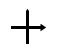 |
| 霧 | 低い地吹雪 | 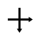 |
|
| もや | 高い地吹雪 | 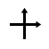 |
|
| 氷霧 | しぶき | ||
| 雪塵旋風/ 蒸気旋風 |
nse | ||
| (b) 降下する粒子（降水） | (d) 粒子の沈着 | ||
| 雨 | 霧粒の沈着 | 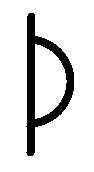 |
|
| 過冷却の雨 | 露 | 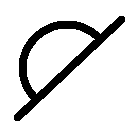 |
|
| 霧雨 | 真の露 | 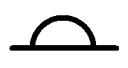 |
|
| 過冷却の霧雨 | 移流露 | 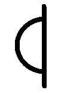 |
|
| 雪 | 凍露 | ||
| 霧雪 | 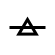 |
霜 | 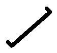 |
| 雪あられ | 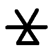 |
真の霜 | |
| 細氷（ダイヤモンドダスト） | 移流霜 | 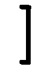 |
|
| ひょう | 霧氷 | ||
| 氷あられ | 樹氷 | 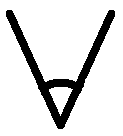 |
|
| 凍雨 | 粗氷 | ||
| (e) 漏斗雲（竜巻等） | 透明氷 | ||
| トルネード | nse* | 雨氷 | 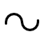 |
| ランドスパウト | nse* | ||
| 寒気内ろうと雲 | nse* | ||
| ウォータースパウト | nse* |
雲以外の水大気現象の観測(セクション3.3.2)
これらの水大気現象は、大気中に浮遊する粒子（例えば、霧）、降水（例えば、雨、霧雨、雪、ひょう）、風によって吹き上げられる粒子（例えば、低い地吹雪または高い地吹雪、しぶき）、あるいは沈着物（例えば、露、霜、霧氷、雨氷）の形態で発生することがある。降水の場合、それが一様（断続的または連続的）であるか、あるいはしゅう雨（雪）性のものであるかについて言及すべきである。特別な研究のために、分析用の雨水サンプルを保管することがある。非常に大きなひょうは、重量と寸法を測定し、可能であれば全体と断面の写真を撮影するべきである。露、霜、霧氷などの沈着物の形態をとる水大気現象の写真は、価値がある場合がある。霧氷や雨氷の層の厚さを測定するべきである。竜巻等（spout）が観測された場合は、高さ、直径、回転方向、および漏斗雲（tuba）の経路を記録するべきである。可能であれば、写真、タイムラプス画像、または動画を撮影するべきである。また、写真を撮ることを含め、これらの水大気現象によって引き起こされた損害についての情報を得ることも重要である。
大気中に浮遊する粒子からなる水大気現象(セクション3.2.1.1)
霧(セクション3.2.1.1.1)
定義: 霧: 地表面における視程を低下させる、大気中の非常に小さな、通常は微小な水滴の浮遊物。
霧
霧は、地表面における視程を低下させる、大気中の非常に小さな、通常は微小な水滴の浮遊物である。この用語は、水平視程が1 km未満に低下した場合に使用される。この写真では、視程はわずか100 m程度である。
視程の低下は霧の構造、特に水滴の数密度と粒径分布に依存する。その構造は時間的および空間的に大きく変化することがある。しかし、英国イングランドのレディングにおけるテムズ川の土手での午後15時のこの特定の例では、視程はゆっくりとしか変化せず、霧は一日中持続した。
ヨーロッパ大陸に中心を持つ高気圧から、イングランド南部にかけて気圧の尾根が延びていた。
氷霧(セクション3.2.1.1.2)
定義: 氷霧: 地表面における視程を低下させる、大気中の無数の微小な氷の粒子の浮遊物。
氷霧は、主に人間の活動による水蒸気が大気中に導入されたときに形成される。この水蒸気が凝結して水滴となり、それが急速に凍結して明確な結晶形を持たない氷の粒子となる。高緯度地方において、通常は気温が-30℃を下回る晴れて穏やかな天候の時に観測される。
氷霧の中では水平視程が非常に制限されることが多く、しばしば50 m未満となる。これは氷の粒子の直径が小さいためであり、一般的には2〜30 μmで、より小さな粒子は気温が-40℃から-50℃の間に形成される。
氷霧はハロ現象（かさ現象）を生じさせないが、霧の中に細氷（ダイヤモンドダスト）も含まれている場合はそのような現象が現れることがある。
降下する粒子の集合（降水）からなる水大気現象(セクション3.2.1.2)
雨
定義: 雨: 雲から降下する水滴の降水。

雨と霧雨
この写真は、雨粒と霧雨の粒の相対的な大きさを示している。定規の各目盛りは1 mmである。
定規は、降水量積算率が約0.6 mm/時の期間中、雨と霧雨が混ざった中程度の降水（現在天気コード59）に約1分間さらされた。
寒冷前線上の波が最近英国イングランド南部のこの場所を東へ通過し、この場所を再び暖域の気流に導入した。英国イングランドのキャンボーン（観測地点から西南西に約335 km、暖域の気流内）からの1200 UTCの高層大気観測では、約830 hPaの頂部まで層雲（Stratus）および層積雲（Stratocumulus）の広範囲にわたる下層雲が示されており、さらにその上には中層雲の層が存在している。比較的数が少なく大きな雨粒は中層雲に由来し、一方、より数が多い霧雨の粒は下層の層雲の層から降下したと考えられる。
霧雨の粒は通常、直径が0.5 mm未満であるが、雨粒はこれより大きく、降水の強度と性質によって異なる。この写真では相対的な大きさがよく示されているが、定規上で大きな雨粒が（重力や表面張力によって）押しつぶされるため、空中の自由落下時における真の直径よりもわずかに大きく見えることに注意しなければならない。それにもかかわらず、この画像は、例えば観察者の眼鏡のレンズに落ちた雨や霧雨の粒がどのように見えるかを示しており、降水が霧雨か、雨か、またはその両方の混合であるかを判断するための有用な補助となる。
雨粒の数密度と粒径分布は、降水の強度と性質によって大きく異なる。
過冷却の雨（着氷性の雨）(セクション3.2.1.2.2)
定義: 過冷却の雨: 水滴の温度が0℃未満である雨。
雨氷
雨氷は、全体的に透明で滑らか、かつ密な氷の沈着物であり、温度が一般的に0℃未満の物体上で、過冷却の雨または霧雨が凍結することによって形成される。
この写真では、小枝や棘が雨氷に完全に覆われ、透明氷（clear ice）をまとったようになっている。これは約4時間の着氷性の雨の後に発生した。過冷却の雨粒は、地表上空の0℃を超える気温の層を落下し、表面温度が0℃未満であった地面の小枝やその他の物体に衝突して凍結した。
過冷却の雨粒は、地面、飛行中の航空機、またはその他の物体に衝突した際に凍結することがある。これは着氷性の雨とも呼ばれる。
霧雨(セクション3.2.1.2.3)
定義: 霧雨: 互いに非常に接近した非常に細かい水滴が雲から降下する、かなり一様な降水。
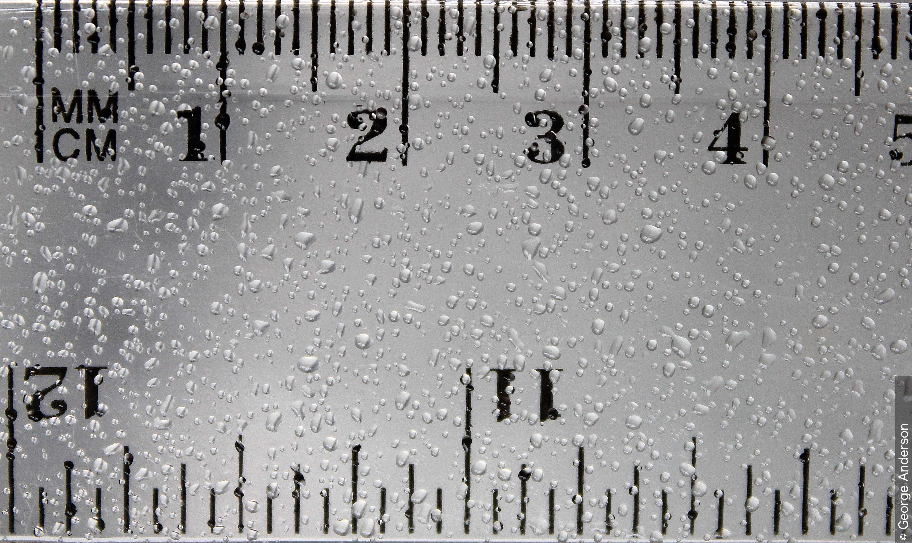
霧雨
この写真は、定規上の霧雨の粒を示し、その粒の大きさを示している。定規は、かなりの数の粒が蓄積するまで数分間、降下する霧雨にさらされた。定規の上部の大きな目盛りはセンチメートルであり、小さな各目盛りは1 mmである。下部の大きな目盛りはインチであり、最小の各目盛りは16分の1インチである。
前線上の波が英国イングランド南部を通過しており、その場所は暖域の気流内にあった。近隣のすべての気象観測所は、霧雨と全天を覆う層雲（Stratus）を報告した。
霧雨は層雲から降下し、この写真の6および7に示されるように、粒は通常直径0.5 mm未満である。定規上のより大きな粒は、着地後に1つ以上の粒が合体したためである可能性が高い。
霧雨の粒の直径は通常0.5 mm未満である。粒はほとんど浮遊しているように見え、そのため大気のわずかな動きさえも視覚化する。
霧雨は通常低い層雲の層から降下し、時には地面に接することもある（霧）。
霧雨の形態での降水量は、特に沿岸部や山岳地帯において、かなりの量（最大1 mm/時）になることがある。
降雨域の周縁部や弱い降雨時に降下する粒は、部分的な蒸発のために霧雨の粒と同程度に小さくなることがある。この状況では、雨粒はより散在しているという点で霧雨の粒と区別される。
降水雲が層雲であると特定されることも、雨と霧雨を区別する要素である。
過冷却の霧雨（着氷性の霧雨）(セクション3.2.1.2.4)
定義: 過冷却の霧雨: 粒の温度が0℃未満である霧雨。
雨氷
雨氷は、全体的に透明で滑らか、かつ密な氷の沈着物であり、温度が一般的に0℃未満の物体上で、過冷却の雨または霧雨が凍結することによって形成される。
この写真では、小枝や棘が雨氷に完全に覆われ、透明氷（clear ice）をまとったようになっている。これは約4時間の着氷性の雨の後に発生した。過冷却の雨粒は、地表上空の0℃を超える気温の層を落下し、表面温度が0℃未満であった地面の小枝やその他の物体に衝突して凍結した。
過冷却の霧雨の粒は、地面、飛行中の航空機、またはその他の物体に衝突した際に凍結することがある。これは着氷性の霧雨と呼ばれる。
雪(セクション3.2.1.2.5)
定義: 雪: 雲から降下する、単独または互いに付着した氷の結晶の降水。
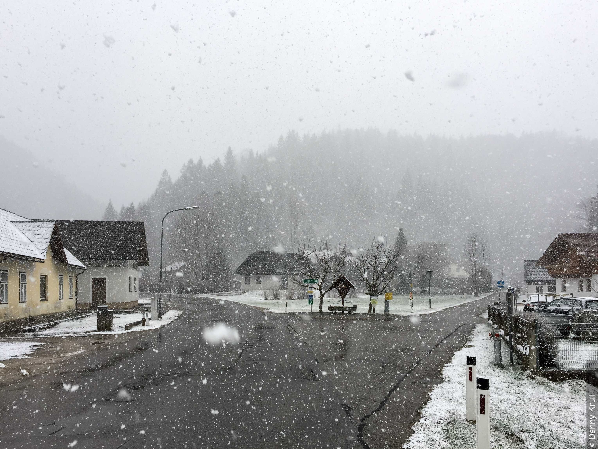
雪
雪は、雲から降下する、単独または互いに付着した氷の結晶の降水である。約-5℃より暖かい気温では、結晶は通常互いに付着して雪片となる。オーストリアのタールからのこの写真は、1および2において雲から降下する雪片を示している。
降雪によって、視程は通常少なくともある程度は低下する。中程度または強い強度の降下する雪片は、視程を著しく低下させる。
霧雪(セクション3.2.1.2.6)
定義: 霧雪: 雲から降下する、非常に小さく不透明な白い氷の粒子の降水。これらの粒子はかなり平坦または細長い。それらの直径は一般に1 mm未満である。

霧雪
霧雪は、雲（通常は層雲または霧）から降下する、非常に小さく不透明な白い氷の粒子である。粒子はかなり平坦または細長く、その直径は一般に1 mm未満である。これらの霧雪は、気温が-2℃の時に着氷性の霧から降下した。
凍結しており、気温がおよそ0℃から-10℃の間にある時に発生するが、この降水のその他の性質は霧雨に対応する。粒が硬い地面に当たっても、跳ね返ることはない。
霧雪は主に層雲または霧から降下し、しゅう雨（雪）の形態で降ることはない。山岳地帯を除き、霧雪は通常少量しか降らない。
雪あられ(セクション3.2.1.2.7)
定義: 雪あられ: 雲から降下する、白く不透明な氷の粒子の降水。これらの粒子は一般に円錐形または丸みを帯びており、その直径は最大で5 mmになることがある。

雪あられ
雪あられは、雲から降下する白く不透明な氷の粒子であり、一般に円錐形または丸みを帯びている。これらが硬い地面に落ちると、跳ね返り、しばしば砕ける。これらは一般に密度が低いため脆く、歩いて踏むと容易に押しつぶされる。
この写真の雪あられは、数回の弱いしゅう雪の結果生じたものである。定規は粒の大きさの指標を提供している。大きな番号付きの目盛りは10 mm間隔であり、最小の目盛りは0.5 mmである。ここにある雪あられの大部分は直径2〜3 mmの範囲にあり、最大のものは直径6 mmに達している。
細氷（ダイヤモンドダスト）(セクション3.2.1.2.8)
定義: 細氷（ダイヤモンドダスト）: 晴天の空から降下する非常に小さな氷の結晶の降水であり、しばしば非常に微小であるため大気中に浮遊しているように見える。

細氷（ダイヤモンドダスト）
これは、チェコ共和国のエルツ山地にあるクリノヴェツ山のネクリッド（標高1,100 m）において、細氷（ダイヤモンドダスト）中の太陽光の反射と屈折によって形成された壮大なハロ現象（かさ現象）を見上げた超広角写真である。
細氷（ダイヤモンドダスト）は、大気中の非常に小さな氷の結晶で構成されており、特に太陽光を受けてきらめく時に視認できる。この写真の塵のような小さな斑点は、太陽光を受けて輝く細氷（ダイヤモンドダスト）の氷の結晶である。
この写真のような複雑なハロ現象は通常、極地においてのみ観測されるが、大気中に氷の結晶が存在する場合、山岳地帯で時折発生することがある。
この写真で見られるハロは、左から右に次の通りである：22度ハロ（内暈）、上端接弧（アッパータンジェントアーク）、サンケーブ・パリーアーク、左右の上部テープアーク（46度パリーアークとも呼ばれる）を伴う上部ラテラルアーク、環天頂アーク、向日アーク（またはサブアンセリックアーク）を伴うヘリアックアーク、ウェゲナーアーク、幻日環、トリッカーアーク、および広がる向日アーク。
これらのハロの種類のうち、22度ハロや環天頂アークなどは非常に一般的である。しかし、それ以外のものはあまり見られず、ヘリアックアーク、向日アーク、ウェゲナーアーク、トリッカーアークなどの一部は、目撃されることが稀である。
細氷（ダイヤモンドダスト）は、極地や高山地帯、および大陸の内陸部において、特に晴れて穏やかで寒い天候の時に観測される。典型的には-10℃未満の急速に冷却される気団の中で形成される。細氷（ダイヤモンドダスト）は通常、よく発達した結晶（しばしば角板）で構成されており、典型的な直径は約100 μmである。
これらの結晶は、主に太陽光を受けてきらめく時に視認でき、ハロ現象を発生させることもある。
細氷（ダイヤモンドダスト）中の視程は大きく変化し、その下限は1 kmを超える。
ひょう(セクション3.2.1.2.9)
定義: ひょう: 氷の粒子（ひょうの粒）の降水。これらは透明であるか、部分的または完全に不透明である。通常は球状、円錐状、または不規則な形態であり、一般に直径は5〜50 mmである。粒子は雲から単独で降下するか、不規則な塊に凝集して降下することがある。
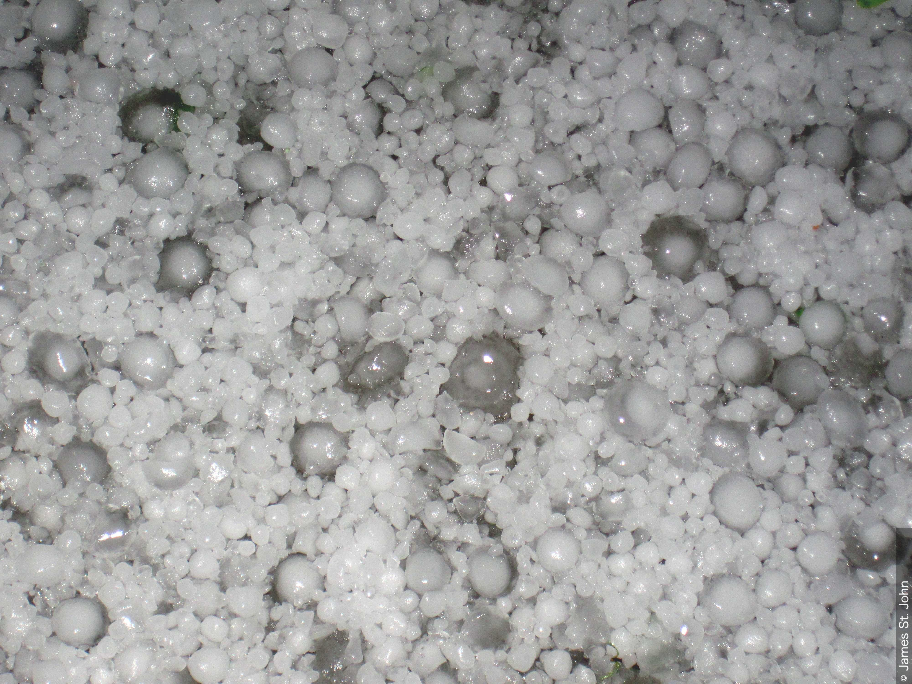
ひょう
これらのひょうの粒は、米国コロラド州リモンという小さな町を通過した、比較的小さいが強力な対流性ストームセル（雷雨セル）から降下した。この事象の最中、ひょうの粒の大きさは時間とともに変化し、この写真に示されるような粒径分布となった。写真内のより小さなひょうの粒は直径5 mmを超え、最大のものは直径約15 mmから25 mmである。
ひょうの粒は氷の粒子であり、透明であるか、部分的または完全に不透明である。通常は球状、円錐状、または不規則な形態である。この写真では、ほとんどのひょうの粒が球状である。
ひょうの降下は、通常は雷雨の間に、積乱雲（Cumulonimbus）からのしゅう雨（雪）として発生する。ひょうの粒は通常、直径数ミリメートルから1センチメートル程度の核の周りに形成される。核は通常不透明な氷で構成されており、透明な氷と不透明な氷の交互の層に囲まれていることがある。この写真では、より大きなひょうの粒の中心部に不透明な氷があり、それが透明な氷の層に囲まれていることが明確に示されている。
ひょうの降下は常にしゅう雨（雪）として発生する。これらは一般に激しい雷雨の際に観測される。
ひょうの粒は通常、幾何学的な中心ではない可能性のある核の周りに形成される。核の直径は数ミリメートルから1センチメートルの範囲である。核は球状または円錐状であり、通常は不透明であるが時には透明な氷で構成される。
ひょうの粒は、一回の降下の中でも非常に多様な形態と寸法で発生することがある。「玉ねぎの皮」のような構造は、例えば不透明な氷と透明な氷の交互の層に囲まれた核で構成される。非常に大きなひょうの粒（20以上の層を持つことが発見されている）を除き、通常は5層以下である。その他のひょうの粒は層を持たず、透明または不透明な氷のみで構成される。
ひょうの粒は典型的には0.85 g/cm³から0.92 g/cm³の間の密度を持つが、空気に満たされた大きな空洞がある場合は密度が低くなることがある。一部のひょうの粒は、氷、水、空気の混合物である海綿状の氷で部分的に構成されている。
例外的な状況において、大きなひょうの粒が互いに付着して、巨大なひょうの不規則な塊を形成することがある。
ひょうの粒は、核が雲粒や雨粒を捕捉したときに形成される。この核の性質については一般的な合意はないが、傾向としては通常、雪あられの周りに形成された氷あられの粒子であると認められている。
氷あられ(セクション3.2.1.2.10)
定義: 氷あられ: 雲から降下する半透明の氷の粒子の降水。これらの粒子はほぼ常に球状であり、時には円錐形の先端を持つ。その直径は5 mmに近づき、あるいはそれを超えることさえある。
氷あられは、積乱雲（Cumulonimbus）からのしゅう雨（雪）において常に発生する。
氷あられは、全体的または部分的に氷の層に覆われた雪あられで構成されている。雪あられの内部の隙間は氷、または氷と水で満たされており、薄い殻だけが凍結している場合もある。この水は、雲粒または雪あられの部分的な融解に由来する可能性がある。氷あられの密度は比較的高く、0.8 g/cm³から、稀な例では0.99 g/cm³の範囲である。
通常、氷あられは容易に押しつぶすことはできず、硬い地面に落ちると、衝突時に音を立てて跳ね返る。
氷あられは、雪あられとひょうの粒の間の移行段階である。部分的に滑らかな表面とより高い密度において雪あられとは異なる。特にそのより小さな大きさにおいて、ひょうの粒とは異なる。
凍雨(セクション3.2.1.2.11)
定義: 凍雨: 雲から降下する透明な氷の粒子の降水。これらの粒子は通常、球状または不規則であり、稀に円錐状である。その直径は5 mm未満である。

凍雨
凍雨は直径5 mm未満の透明な氷の粒子である。粒子は通常、球状または不規則な形状であり、円錐状であることは稀である。これらは、高層雲（Altostratus）や乱層雲（Nimbostratus）などの層状雲から降下した雨粒や雪片が、雪片が融解または部分的に融解する気温0℃を超える空気の層に入り込むことで生じる。その後、気温0℃未満の空気の層に入り込み、凍結して固体の降水として地面に到達する。
写真の上部にある定規は、これらの凍雨の大きさを測るためのスケールを提供している。下側のスケールはセンチメートル（数字付き）とミリメートルである。これらの凍雨は直径1〜2 mmである。
凍雨は、一般に高層雲（Altostratus）または乱層雲（Nimbostratus）から降下する雨粒または雪片（一般的ではない）を起源とする。これらは、雪片が融解または部分的に融解する雲底下の暖かい空気の層に入り込み、その後冷たい空気の層（0℃未満）に入り込んで凍結し、固体の降水として地面に到達する。
凍結した雨粒の形態の凍雨は透明であるが、一般的ではない再凍結した雪片は、雪片が完全に融解したか部分的にのみ融解したかに応じて、部分的に透明であり部分的に不透明である。
凍雨は容易に押しつぶすことはできない。硬い地面に落ちると、一般的に衝突時に音を立てて跳ね返る。
凍雨は部分的に液体である可能性がある。その密度は通常、氷の密度（0.92 g/cm³）に近いか、それ以上である。
風によって吹き上げられる粒子の集合からなる水大気現象(セクション3.2.1.3)
地吹雪（低い地吹雪および高い地吹雪）(セクション3.2.1.3.1)
定義: 地吹雪（低い地吹雪および高い地吹雪）: 十分に強く乱れた風によって地面から吹き上げられる雪の粒子の集合。
この水大気現象の発生は、風の条件（風速および突風性）ならびに地表の雪の状態および古さに依存する。低い地吹雪（drifting snow）と高い地吹雪（blowing snow）の2種類の現象がある。
低い地吹雪(セクション3.2.1.3.1)
定義: 低い地吹雪: 風によって地面から低い高さに吹き上げられる雪の粒子の集合。

雪だまりと低い地吹雪
この写真は、英国イングランドのウェスト・ヨークシャーにあるロンボルズ・ムーアの空積み石壁にできた雪だまりを示している。吹きだまりになっていない雪は開けた野原に見られる。背景では、3と4において、強風によって雪の粒子が地面から低い高さに吹き上げられている。目の高さでの水平視程は、風によって吹き上げられた雪の粒子によって著しく低下することはないため、これは高い地吹雪ではなく低い地吹雪に分類される。
高い地吹雪(セクション3.2.1.3.1)
定義: 高い地吹雪: 風によって地面から中程度または高い高さに吹き上げられる雪の粒子の集合。
.jpeg)
高い地吹雪
この一連の写真は、フィンランド湾の沿岸海氷上における高い地吹雪を示している。高い地吹雪とは、風によって地面から中程度または高い高さに吹き上げられる雪の粒子の集合である。高い地吹雪の中では、目の高さでの水平視程は一般に非常に悪い。
15〜20 m/sの強い突風によって地面から空中に吹き上げられている雪の粒子は、実際には積乱雲（Cumulonimbus）のしゅう雨（雪）雲から降下した雪あられである。この写真の中央には、高い地吹雪の渦巻く渦が見られる。同時に中程度の雪あられのしゅう雨（雪）が発生していたため、卓越する現在天気コードは ww = 88 である。
.jpeg)
高い地吹雪（画像2）
この画像はズーム写真であるが、画像1よりも遠距離のものである。積乱雲（Cumulonimbus）から降下する雪あられのしゅう雨（雪）と、高い地吹雪および低い地吹雪の組み合わせにより、視程は悪い。
海氷のすぐ上にある明るく白い拡散した領域として低い地吹雪を見ることができ、そこでは新しく降った雪あられが風によって吹き上げられている。地面近くの視程は約500 mである。
突風により、氷面から高さ5〜10 mの高い地吹雪の隆起がいくつか立ち上がっている。この高い地吹雪は、背景の暗い森に対してはっきりと見ることができる。暗灰色の空には、積乱雲（Cumulonimbus）から降下している雪あられがあり、また風によって地面から吹き上げられている雪あられもある。高さ2 mにおける視程は約2 kmである。
中程度の雪あられのしゅう雨（雪）が観測されているため、卓越する現在天気コードは ww = 88 である。積乱雲（Cumulonimbus）のしゅう雨（雪）雲が空全体を覆っているため、雲のコードは CL = 9、CM = /、CH = / である。
.jpeg)
高い地吹雪（画像3）
この画像では、雪あられのしゅう雨（雪）は通過し、強く突風を伴う風のために、高くそびえる高い地吹雪の渦だけが海氷上を伝播している。弱い高い地吹雪が観測されているため、卓越する現在天気コードは ww = 38 である。
しぶき(セクション3.2.1.3.2)
定義: しぶき: 広大な水面の表面、一般には波の峰から風によって引き裂かれ、空中の短い距離へ上方に運ばれる水滴の集合。

しぶきとしぶき虹（海しぶき虹）
しぶきは、広大な水面の表面、一般には波の峰から風によって引き裂かれ、空中の短い距離へ上方に運ばれる水滴の集合である。
この写真において、広大な水面は太平洋であり、米国カリフォルニア州パシフィカの海岸で砕ける波の峰から風がしぶきを吹き飛ばしている。
太陽が輝いているため、しぶきの「スクリーン」の中にしぶき虹（海しぶき虹）が形成されている。
水面が荒れている時、水滴は泡を伴うことがある。強い強風（gale）を伴う場合、しぶきは局地的に移動する渦の形態をとることがある。
雪塵旋風(セクション3.2.1.3.3)
定義: 雪塵旋風: 小さな直径とほぼ垂直な軸を持つ、様々な高さの渦巻く柱の形態で地面から吹き上げられる雪。

雪塵旋風
雪塵旋風はめったに見られない現象である。これは地表のウインドシアが積雪上で局地的な渦を発生させるように作用し、その結果、渦巻く雪の粒子の柱が地面から吹き上げられる時に発生する。
この写真の雪塵旋風は、カナダのアルバータ州にあるアブラハム湖の北端に近い場所から観測された。この場所はカナダのロッキー山脈のすぐ東、クートネー平原にある。
これは、地表のウインドシアが積雪上で渦を発生させるように作用し、その結果、雪の粒子の渦巻く柱が地面から吹き上げられる時に発生する、非常に稀な現象である。
これは「スノーナード（snownado）」と呼ばれることもある。
蒸気旋風(セクション3.2.1.3.4)
定義: 蒸気旋風: 冷たい空気が相対的にずっと暖かい水域または飽和した表面の上にある時に形成される、小さな直径とほぼ垂直な軸を持つ、様々な高さの飽和空気の小さく緩やかな渦巻く柱。

蒸気霧/蒸発霧の中の蒸気旋風
この写真では、小さな川の上の蒸発霧から上昇するいくつかの蒸気旋風の渦が1、2、3、4に見られる。蒸気旋風は、冷たい空気が相対的にずっと暖かい水域または飽和した表面の上にある時に形成される、小さな直径とほぼ垂直な軸を持つ、様々な高さの飽和空気の小さく緩やかに渦巻く柱である。蒸気旋風は、典型的には蒸発霧（蒸気霧または北極海煙）に関連して見られる。これらの渦は直径約1 m、高さ数メートルである。
蒸気旋風は典型的には蒸気霧（北極海煙）に関連して見られる。渦の大きさは直径1メートル程度、高さ数メートルである。これらは、上空のずっと冷たい空気のために地面付近の空気が非常に不安定な時に、相対的に暖かい水域（または例外的に飽和した陸地表面）の上に形成される。蒸気旋風は、太陽が地面を熱している時に霜の降りた草の表面で観測されたことがある。
粒子の沈着からなる水大気現象(セクション3.2.1.4)
霧粒の沈着(セクション3.2.1.4.1)
定義: 霧粒の沈着: 表面温度が0℃を上回る物体上の、過冷却されていない霧（または雲）粒の沈着。

霧粒の沈着
写真は、ハリエニシダの茂みに垂直に架かるクモの巣を示している。視程約100 mの深い移流霧が数時間この地域を覆っていた。撮影者の背後から約5ノットの軽風が吹いており、それが霧粒を巣に接触させ、付着させた。時間が経つにつれて、さらに多くの水滴が巣を通過する際に、いくつかが合体してより大きな水滴を作り出したため、様々な大きさが視認できる。最大のものは画像の中央付近にあるが、そのすぐ上にははるかに小さな水滴の連なりが見える。表面張力によってそれらは球形を保っている。
霧は、水蒸気が飽和し、大気中に浮遊する微小な液体の水滴に凝結するときに形成される。霧粒は非常に小さく、霧雨の粒の直径が100 μmであるのに対し、典型的には10〜15 μm（1 μm = 1/1000 mm）の平均直径を持つ。
霧粒の沈着は、特に地形性の雲が頻繁に発生する高地で観測される。沈着の広がりや深さは、霧の持続時間、霧（または雲）粒の粒径分布と数密度、および水滴の衝突速度に依存する。それはまた、沈着物が形成される物体（しばしば葉）の特性の関数でもある。大量の沈着が発生すると、沈着した水滴は合流して地面に滴り落ちる。状況によっては、一晩の間にこのようにして木から落ちる水の量が、中程度のしゅう雨（雪）からの降雨量と同じくらいになることがある。
露(セクション3.2.1.4.2)
定義: 露: 周囲の空気からの水蒸気の直接的な凝結によって生成される、物体上の水滴の沈着。
露
画像は、非常に小さな水滴からなる、草の上の露の沈着を示している。夜間の放射冷却によって地面に近い空気が露点未満に冷却されたため、余分な水蒸気が草の葉に凝結した。水滴の大きさが広範囲にわたっていることに注意されたい。いくつかのより大きな水滴は、より小さな水滴が融合したものであるように見える。非常に弱い風と、太陽の低い角度からの光線から草を遮る生け垣によって蒸発が抑制されたため、露は正午でもまだ存在していた。
露には2種類ある：真の露と移流露である。
真の露(セクション3.2.1.4.2)
定義: 真の露: 一般に夜間の放射によって十分に冷却され、周囲の空気から直接凝結を引き起こす物体の表面における水滴の沈着。 真の露は通常、地面または地面に近い物体、主にそれらの水平面上に沈着する。露は特に空気が穏やかで空が晴れているときに観測される。
露は、露出した表面への霧からの水滴の沈着や、植物から滲み出る水滴（溢液現象として知られる現象）と混同してはならない。これらはしばしば露の沈着と同時に起こるが、別々に起こることもある。
移流露(セクション3.2.1.4.2)
定義: 移流露: 移流によってこの表面に接触する水蒸気の直接的な凝結を引き起こすほど十分に冷たい物体の表面における水滴の沈着。
移流露は主に垂直な露出した表面に沈着する。相対的に暖かく湿った空気が、露出した表面の温度が移流してきた空気の露点よりも低い地域に突然侵入してきたときに観測される。移流露は、霧粒の沈着や、吸湿性物質の薄い膜で覆われた露出した表面（道路など）で湿度の高い天候のときに観測される偽の露と混同してはならない。
凍露(セクション3.2.1.4.3)
定義: 凍露: 白く凍結した露の粒の沈着。

凍露
この写真は、凍結した2、3の露の粒を極端なクローズアップで示している。この種類の沈着は凍露として知られている。霜と混同してはならない。ただし、草の葉や凍結した露の粒の表面に、微視的な霜の結晶が形成されていることに注意されたい。
凍露は、凍結した露の粒である。凍露を霜と混同してはならない。
霜(セクション3.2.1.4.4)
定義: 霜: 周囲の空気からの水蒸気の昇華によって生成される氷の沈着。一般に結晶状の外観をしている。

真の霜
霜は、周囲の空気からの水蒸気の昇華によって生成される氷の結晶の沈着である。「真の霜」は、典型的には晴天と軽風の条件下で、夜間の放射によって十分に冷却された地面または地面に近い物体の水平面上に主に形成される。
この写真は、草の葉や地面の落ち葉に沈着した霜を示している。写真は、気温が-5℃に下がった寒い夜の後に撮影された。夜間の草の表面温度は-6℃から-10℃の範囲であったが、写真が撮影された午前遅くには0℃まで上昇していた。夜間の風速は約3ノットであった。
霜には2種類ある：真の霜と移流霜である。
真の霜(セクション3.2.1.4.4)
定義: 真の霜: 一般に鱗片状、針状、羽毛状、または扇状の形態をとる氷の沈着であり、周囲の空気に含まれる水蒸気の昇華をもたらすほど、一般に夜間の放射によって表面が十分に冷却された物体上に形成される。
真の霜は通常、地面または地面に近い物体、主にそれらの水平面上に沈着する。霜は、空気が穏やかで空が晴れている一年の寒い時期に特に観測される。
移流霜(セクション3.2.1.4.4)
定義: 移流霜: 一般に結晶形態をとる氷の沈着であり、通常は移流のプロセスを通じて、この表面に接触する空気に含まれる水蒸気の昇華をもたらすほど表面が十分に冷たい物体上に形成される。
移流霜は主に垂直な露出した表面に沈着する。相対的に暖かく湿った空気が、露出した表面の温度が0℃未満であり、かつ移流してきた空気の霜点よりも低い地域に突然侵入してきたときに観測される。
霧氷(セクション3.2.1.4.5)
定義: 霧氷: 表面温度が0℃未満またはわずかに0℃を上回る物体上の、過冷却された霧または雲粒の凍結によって一般に形成される氷の沈着。
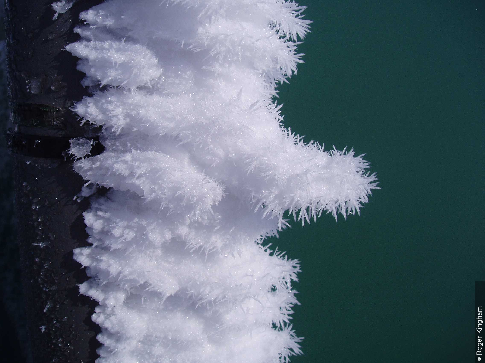
霧氷
これは、英国スコットランドのケアンゴーム山地にあるケアンウェル山（標高933 m）の山頂の柱に沈着した霧氷のクローズアップ写真である。
霧氷は、表面温度が0℃未満またはわずかに0℃を上回る物体上の、過冷却された霧または雲粒の凍結によって一般に形成される氷の沈着である。
霧氷には3種類ある：樹氷、粗氷、および透明氷である。異なる種類の霧氷の形成をもたらすプロセスは、ほぼ同時に起こることもあれば、より長い期間にわたって連続して起こることも、あるいは交互に起こることもある。したがって、状況によっては、沈着物内に移行状態を伴う、非常に不均質な「全体的な沈着物」が観測されることがある。
樹氷(セクション3.2.1.4.5)
定義: 樹氷: 主に氷の細い針または鱗片からなる壊れやすい霧氷。

樹氷
夜間の晴天と軽風により、広範囲にわたる濃い着氷性の霧と樹氷の沈着が生じた。写真の撮影場所から50 m未満の距離で観測された最低気温は-5.1℃であり、写真撮影時の気温は-3℃であった。
樹氷は、主に細い針（1と2に見られる）または氷の鱗片からなる壊れやすい沈着物である。地面付近では、穏やかな、または軽風の条件下で、露出した物体のすべての側面に沈着する。この写真では、非常に弱い風に向いていた葉や実の側面に最も大きな沈着がある（3と4）。
地面付近では、樹氷は穏やかまたは弱風の条件下で、露出した物体のすべての側面に沈着する。樹氷は、物体が揺れると簡単に落ちる。主に-8℃未満の周囲気温で形成される ஆராய்ச்சியாளர்கள்.-8℃をはるかに下回る気温では、樹氷の形成は必ずしも霧の存在を必要としない。
粗氷(セクション3.2.1.4.5)
定義: 粗氷: 通常は白色の粒状の霧氷であり、氷の粒の結晶状の枝で飾られている。

粗氷
この写真は、ドイツのエルツ山地にあるフィヒテルベルク山（標高1,215 m）の山頂にある物体に沈着した粗氷を示している。この山頂は、ボヘミアのイーガー川の谷からエルツ山地の縁を越えて流れ込んだ着氷性の霧の影響を受けた。霧氷の沈着は、強い南風の中で、0℃未満の温度の物体上で過冷却された霧または雲粒が凍結することによって形成された。
粗氷は、水滴が多かれ少なかれ個別に凍結し、空気の隙間を残すように、過冷却された水が急速に凍結することによって形成される。地面付近では、主に少なくとも中程度の風にさらされている物体に沈着する。風上方向では、沈着物が厚い層を形成することがある。自由大気中では、粗氷は相対風にさらされる航空機の部分に形成されることがある。粗氷はかなり粘着性があるが、物体からこすり落とすことができる。粗氷は主に-2℃から-10℃の間の気温で形成される。
透明氷(セクション3.2.1.4.5)
定義: 透明氷: 明確に定義された形状や形態を持たない、通常は透明で滑らかかつ密な霧氷であり、表面はでこぼこしていて、形態学的には雨氷に似ている。 地面および地面付近では、透明氷は主に風にさらされる物体の表面に沈着する。特に山岳地帯で観測される。自由大気中では、主に相対風にさらされる航空機の部分に発生する。
透明氷は過冷却された水のゆっくりとした凍結によって形成されるため、凍結する前に氷の粒の間の空気の隙間に浸透する。透明氷は非常に粘着性が高く、壊すか溶かすことによってのみ物体から取り除くことができる。透明氷は、ほとんど全ての場合、周囲気温が0℃から-3℃の間で形成される。
雨氷(セクション3.2.1.4.6)
定義: 雨氷: 一般に透明な、滑らかで密な氷の沈着物であり、表面温度が0℃未満またはわずかに0℃を上回る物体上での、過冷却された霧雨の粒または雨粒の凍結によって形成される。
雨氷
雨氷は、全体的に透明で滑らか、かつ密な氷の沈着物であり、温度が一般的に0℃未満の物体上で、過冷却の雨または霧雨が凍結することによって形成される。
この写真では、小枝や棘が雨氷に完全に覆われ、透明氷をまとったようになっている。これは約4時間の着氷性の雨の後に発生した。過冷却の雨粒は、地表上空の0℃を超える気温の層を落下し、表面温度が0℃未満であった地面の小枝やその他の物体に衝突して凍結した。
雨氷は、降水にさらされた表面のあらゆる部分を覆う。それは一般にかなり均質であり、形態学的には透明氷に似ている。地面または地面付近では、霧雨の粒または雨粒が霜点未満の気温の層を落下する際に過冷却された場合に雨氷が形成される。自由大気中では、航空機が過冷却された降水にさらされた時に雨氷が観測される。雨氷は過冷却された液体の水のゆっくりとした凍結によって形成されるため、凍結する前に氷の粒子の間の空気の隙間に浸透する。
物体への衝突時に過冷却されていなかった霧または雲粒が、0℃をはるかに下回る温度の物体上で凍結することによって形成される氷の沈着も、雨氷として知られている。
地面上の雨氷は、地面氷（路面では「ブラックアイス」として知られる）と混同してはならない。地面氷は、過冷却されていない霧雨の粒または雨粒の降水からの水が後に地面で凍結した場合、地面の雪が完全または部分的に融解した後に再凍結した場合、あるいは地面の雪が交通によって圧縮されて硬くなった場合に形成される。
粒子の渦からなる水大気現象（竜巻等）(セクション3.2.1.5)
定義: 竜巻等（Spout）: しばしば激しい旋風からなる現象であり、積乱雲（Cumulonimbus）または積雲（Cumulus）の雲底から突き出た雲の柱または逆円錐状の雲（漏斗雲）の存在、および海面から吹き上げられた水滴、あるいは地面から吹き上げられた塵、砂、またはごみで構成される「茂み（bush）」の存在によって明らかになる。
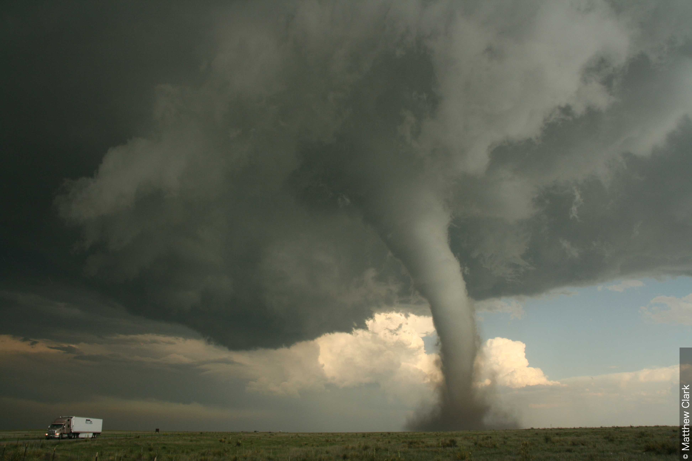
竜巻等（トルネード）
この写真は、米国コロラド州カンポ付近で発生したトルネード（改良藤田スケールでEF2の強度）を示している。トルネードは竜巻等（spout）の特定のタイプである。
竜巻等は、積乱雲（Cumulonimbus）または積雲（Cumulus）の雲底から突き出た雲の柱または逆円錐（漏斗雲）の存在、および海面から吹き上げられた水滴、あるいは地面から吹き上げられた塵、砂、またはごみで構成される「茂み」の存在によって明らかになる、激しい旋風として定義される。
漏斗雲の軸は垂直、傾斜、または時には曲がりくねっている。時折、漏斗は「茂み」と合体する。旋風、すなわち渦の中の空気は、多くの場合低気圧性に急速に回転する。漏斗および「茂み」の外側でも急速な回転が観測されることがある。さらに離れた場所では、空気はしばしば非常に穏やかである。雲の柱の直径は通常10 mのオーダーであるが、時には数百メートルに達することもある。一つの雲に接続した複数の竜巻等（多重渦）が観測されることがある。一部の竜巻等（トルネード）は極めて破壊的であり、最大で幅5 km、長さ数百キロメートルに及ぶ荒廃した経路を残すことがある。弱い竜巻等が積雲（Cumulus）の下で時折観測される。
竜巻等は4つのカテゴリーに分けられる。
トルネード(セクション3.2.1.5.1)
定義: トルネード: 積雲状の雲の雲底から伸びる回転する空気の柱であり、地面と接する凝結漏斗として、および/または地面における付随する循環する塵または破片の雲としてしばしば視認できる。
.jpeg)
トルネード（画像1）
2010年5月31日の米国コロラド州カンポにおけるトルネードの初期段階。トルネードは写真が撮影される直前に接地した。それは大きな壁雲（murus）の下に形成されており、壁雲が写真の上部の大部分を占めている。この段階でのトルネードの凝結漏斗は比較的狭い。
トルネードは、積雲状の雲の雲底から伸びる回転する空気の柱として定義され、地面と接する凝結漏斗として、および/または地面における付随する循環する塵または破片の雲としてしばしば視認できる。
地面における凝結漏斗の水平方向の幅が、地面から雲底までの高さと少なくとも同じくらいである大きなトルネードは、くさび形トルネード（wedge tornado）と呼ばれることがある。
トルネードの消散段階では、凝結漏斗は収縮して幅が狭くなり、ロープ状（ロープ漏斗）になり、またねじれ曲がることもある。
一部のトルネードは、主要な循環の内部に二次的な渦（吸引渦またはサブボルテックス）を含むことがある。
トルネードのカテゴリー(セクション3.2.1.5.2)
トルネードは、以下の明確な形成グループに分類できる。
タイプI – スーパーセルに関連するもの。
タイプII – 準線状対流系に関連するもの。および
タイプIII – 局地的な対流およびシアー渦。これらは以下で構成される：ランドスパウト、ウォータースパウト、および寒気内ろうと雲。
ランドスパウト(セクション3.2.1.5.3)
定義: ランドスパウト: 組織化されたストームスケールの回転から生じないため、壁雲（murus）やメソサイクロンとは関連しないトルネード。
ランドスパウトは、典型的には積乱雲（Cumulonimbus）または塔状に発達した積雲（雄大雲：Cumulus congestus）の下で観測され、しばしば単なる塵の渦として現れ、回転は典型的には水平シアーの線から生じる。これらは本質的にウォータースパウトの陸上版に相当する。
寒気内ろうと雲(セクション3.2.1.5.4)
定義: 寒気内ろうと雲: 上空の空気が異常に冷たい時に、小さな雷雨またはしゅう雨（雪）雲から発達し得る、漏斗雲または（稀に）小さく比較的弱いトルネード。

漏斗雲 / 寒気内ろうと雲
この漏斗雲は、英国イングランド北東部上空のしゅう雨（雪）性の北よりの気流内に位置し、トラフ（気圧の谷）に関連していた積雲状の雲（雄大雲（Cumulus congestus）または積乱雲（Cumulonimbus））の雲底から発達した。
すべてのトルネードは、その後に地面に到達する漏斗雲の発達から始まるが、ここに示されているような寒気内ろうと雲は、局地的な対流およびシアー渦から生じ、より大規模なメソサイクロンとは関連していない。寒気内ろうと雲は、典型的には雄大雲（Cumulus congestus）または積乱雲（Cumulonimbus）から発達する。これらは通常は地面に到達しないが、地面に到達した場合（トルネードとして）でも、メソサイクロンに関連するトルネードよりはるかに暴力的ではない。
寒気内ろうと雲は典型的には地面に到達しない（漏斗雲）が、トルネードとして地面に到達した場合でも、他のタイプよりはるかに暴力的ではない。
ウォータースパウト(セクション3.2.1.5.5)
定義: ウォータースパウト: 水上で発生するトルネード。通常は、積乱雲（Cumulonimbus）または雄大雲（Cumulus congestus）の下の開けた水域上にある、比較的小さく弱い回転する空気の柱である。
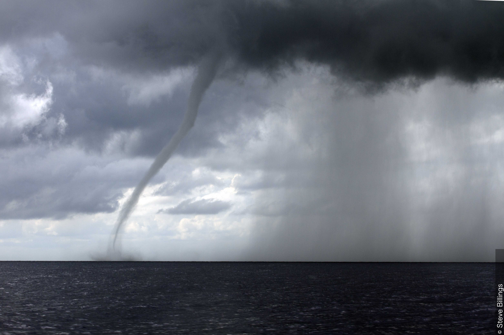
ウォータースパウト
この写真は、メキシコのコスメル西海岸沖で発生したウォータースパウトを示している。
ウォータースパウトは水上で発生するトルネードである。通常は、積乱雲（Cumulonimbus）または塔状に発達した積雲の下の開けた水域上にある、比較的小さく弱い回転する空気の柱である。ウォータースパウトは本質的にランドスパウトの水上版に相当し、熱帯または亜熱帯の海域で最も一般的である。
写真の右側では、対流雲から降水が降下しているのが見える。
ウォータースパウトは本質的にランドスパウトの水上版に相当する。熱帯または亜熱帯の海域、および水平シアー境界に沿って最も一般的である。
トルネードの強度(セクション3.2.1.5.6)
トルネードの強度は、表21に示される改良藤田スケールを使用して、引き起こされた被害の程度から推定できる。
表21. トルネードの強度を評価するための改良藤田スケール
| 改良藤田スケール階級 | 3秒間の突風風速 | 被害 |
|---|---|---|
| 0 | 29.2–38.1 m/s 105–137 km/h |
軽微な被害: 屋根瓦が吹き飛ばされるか屋根の一部が剥がれる。雨どいや外壁への被害。木の枝が折れる。根の浅い木が倒れる。 |
| 1 | 38.3–49.4 m/s 138–178 km/h |
中程度の被害: 屋根に著しい被害。窓ガラスが割れる。外側のドアが破損または喪失する。移動住宅が横転するかひどく破損する。 |
| 2 | 49.7–60.6 m/s 179–218 km/h |
かなりの被害: しっかりした構造の家の屋根が引き剥がされる。家が土台から移動する。移動住宅が完全に破壊される。大きな木が折れるか根こそぎ倒れる。車が空中に投げ出される。 |
| 3 | 60.8–73.9 m/s 219–266 km/h |
深刻な被害: しっかりした構造の家の階全体が破壊される。大きな建物に著しい被害。基礎の弱い家が吹き飛ばされる。木が樹皮を失い始める。 |
| 4 | 74.2–89.4 m/s 267–322 km/h |
極めて甚大な被害: しっかりした構造の家が倒壊する。車がかなりの距離を投げ出される。組積造の建物の最上階の外壁が崩壊する可能性が高い。 |
| 5 | >89.4 m/s >322 km/h |
壊滅的/信じられないほどの被害: しっかりした構造の家が吹き飛ばされる。鉄筋コンクリート構造物が致命的な被害を受ける。高層ビルが深刻な構造的被害を被る。木は通常完全に樹皮を剥がされ、枝を奪われ、折られる。 |
塵大気現象(セクション3.2.2)
分類
表16. 塵大気現象の分類
| 大気現象の名称 | 記号 | 大気現象の名称 | 記号 |
|---|---|---|---|
| (a) 大気中に浮遊する粒子 | (b) 風によって吹き上げられる集合 | ||
| 煙霧 | 低い塵または砂および高い塵または砂 | ||
| ちり煙霧 | 低い塵または砂 | ||
| 煙 | 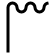 |
高い塵または砂 | |
| 塵あらしまたは砂あらし | 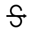 |
||
| 塵または砂の壁 | 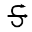 |
||
| 塵旋風または砂旋風（塵旋風） | 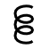 |
||
塵大気現象の観測(セクション3.3.3)
塵大気現象は、地面から吹き上げられる粒子（例えば、低い塵または砂、高い塵または砂、塵あらしまたは砂あらし）として、あるいは大気中にほぼ浮遊する粒子（煙霧、ちり煙霧、または煙）として発生することがある。可能な限り、記録には大気現象が及ぶ高さと、異常な着色に関する情報を含めるべきである。
大気中に浮遊する粒子からなる塵大気現象(セクション3.2.2.1)
煙霧(セクション3.2.2.1.1)
定義: 煙霧: 肉眼では見えないほど極めて小さく、大気にオパールのような外観を与えるのに十分な数を持つ、乾燥した粒子の空気中の浮遊物。
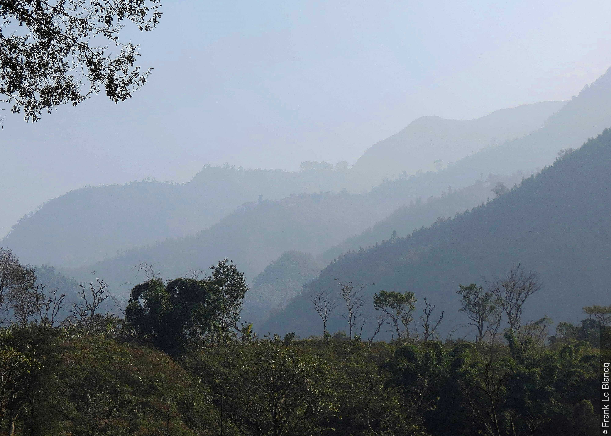
煙霧
煙霧は、肉眼では見えないほど極めて小さく、大気にオパールのような外観を与えるのに十分な数を持つ、乾燥した粒子の空気中の浮遊物である。
この写真では、カメラから遠ざかるにつれて続く丘の斜面の細部を、煙霧が次第に覆い隠している。この煙霧は、冬の間にネパールの遮蔽された中央谷に何日も連続して停滞した、一般的な汚染と小さな焚き火からの煙によって引き起こされた。
光が煙霧の粒子によって散乱されるため、煙霧を通して見られる遠くの明るい物体や光は黄色または赤みを帯びて見え、暗い物体は青みがかって見える。煙霧の粒子自体が独自の色を持っている場合もあり、それもこの効果に寄与する。
ちり煙霧(セクション3.2.2.1.2)
定義: ちり煙霧: 観測時より前に、塵あらしまたは砂あらしによって地面から吹き上げられた、塵または小さな砂の粒子の空気中の浮遊物。塵あらしまたは砂あらしは、観測場所の地点もしくはその近くで、あるいはそこから遠く離れた場所で発生した可能性がある。

ちり煙霧
ちり煙霧は、観測時より前に、観測地点もしくはその近くで、あるいはそこから遠く離れた場所で発生した塵あらしまたは砂あらしによって地面から吹き上げられた、塵または小さな砂の粒子の空気中の浮遊物である。
カタールのドーハ空港からのこの写真では、強いシャマール風に乗って遠くから吹き飛ばされてきた大気中の大量の塵によって、視程が約1,200 mまで著しく低下している。地上の風は北北西から19ノットであった。
煙(セクション3.2.2.1.3)
定義: 煙: 燃焼によって生成された小さな粒子の空気中の浮遊物。

積雲（雄大雲） フラマゲニトゥス
この写真では、下層の煙の層の上に積雲（Cumulus）の雄大雲（congestus）フラマゲニトゥスが見られる。この雲は、山火事の上の空気の対流の直接的な結果として形成された。
キプロスのリマソール地区にあるポタミッサ近くの山火事は、キヴィデス村の近くで写真が撮られた場所から約20 km離れていた。雲の底は、火事から直接立ち上る煙と、下層大気に広がる煙の層によって部分的に遮られている。写真の右側にある自然起源の他の積雲は、煙によって部分的に隠されている。
積雲フラマゲニトゥスは、その比較的大きな広がり、カリフラワーに似た膨らんだ上部、および雲頂から芽吹く塔状の構造によって、雄大雲（congestus）の種として特定される。時間の経過に伴う観測により、これらの塔状の構造は雲の本体から上昇したものの、上空の乾燥した大気中で消散したことが示された。
この塵大気現象は、地表面近くまたは自由大気中のいずれかに存在する可能性がある。煙を通して見ると、太陽は日の出と日の入り時に非常に赤く見え、空高くにある時にはオレンジ色の色合いを示す。比較的近くの都市からの煙は、茶色、暗灰色、または黒色であることが多い。かなり近い山火事を起源とする広範囲の層をなす煙は、太陽光を散乱させ、空に緑黄色がかった色合いを与える。非常に遠くの発生源から均一に分布した煙は、一般に明るい灰色がかった、または青みがかった色合いを持つ。煙が大量に存在する場合、その匂いによって識別されることがある。
塵大気現象である「煙」が自由大気中に存在する場合、慣例として、その拡散した外観と識別可能な輪郭がないことによって、煙の雲（火事からの雲または産業に起因する雲）と区別される。
風によって吹き上げられる粒子の集合からなる塵大気現象(セクション3.2.2.2)
低い塵または砂および高い塵または砂(セクション3.2.2.2.1)
定義: 低い塵または砂および高い塵または砂: 観測地点もしくはその近くにおいて、十分に強く乱れた風によって地面から低いまたは中程度の高さに吹き上げられる塵または砂の粒子の集合。
これらの塵大気現象を発生させるのに必要な風の条件（風速および突風性）は、地面の性質、状態、および乾燥の程度に依存する。
低い塵または砂(セクション3.2.2.2.1)
定義: 低い塵または砂: 風によって地面から低い高さに吹き上げられる塵または砂。目の高さ（目の高さは地上1.80 mと定義される）における視程は著しく低下することはない。

低い砂
低い砂（1および2に見られる）は、風によって地面から低い高さに吹き上げられる砂として定義される。砂の粒子の動きはほぼ地面と平行である。地上の物体は移動する砂によって覆われたり隠されたりすることがあるが、目の高さ（地上1.8 m）での水平視程は著しく低下しないことに注意されたい。
非常に低い障害物は、移動する塵または砂によって覆われたり隠されたりする。塵または砂の粒子の動きは、ほぼ地面と平行である。
高い塵または砂(セクション3.2.2.2.1)
定義: 高い塵または砂: 風によって地面から中程度の高さに吹き上げられる塵または砂。目の高さ（目の高さは地上1.80 mと定義される）における水平視程は著しく低下する。
塵または砂の粒子の濃度は、時には空や太陽さえも覆い隠すのに十分なことがある。
塵あらしまたは砂あらし(セクション3.2.2.2.2)
定義: 塵あらしまたは砂あらし: 強く乱れた風によって大きな高さに激しく持ち上げられた塵または砂の粒子の集合。

塵あらし
塵あらしまたは砂あらし（一般にハブーブとして知られる）は、強く乱れた風によって大きな高さに激しく持ち上げられた塵または砂の集合である。
この写真はアフガニスタンのヘルマンド州での塵あらしを示している。塵は、雲底の高い雷雨からの下降気流によって吹き上げられた。
塵あらしの進行部分は、この写真のように、かなり急速に前進する幅広く高い壁の外観を持つことが多い。「塵の壁」の先端は、前進するガストフロント（突風前線）の位置を示している。この塵あらしにより視程は約10 mまで低下し、50ノットを超える最大瞬間風速が記録された。状況は約1時間後に改善した。
塵あらしまたは砂あらしは一般に、地面が緩い塵または砂で覆われている地域で発生する。時には、長距離を移動した後、地面を覆う塵や砂がない地域の上空で観測されることもある。塵あらしまたは砂あらしの進行部分は、かなり急速に前進する幅広く高い壁の外観を持つことがある。塵または砂の壁はしばしば積乱雲（Cumulonimbus）を伴い、その雲は塵や砂の粒子によって隠されることがある。これらはまた、前進する寒気団の先端に沿って雲を全く伴わずに発生することもある。
塵旋風または砂旋風（塵旋風）(セクション3.2.2.2.3)
定義: 塵旋風または砂旋風（塵旋風）: 小さな直径とほぼ垂直な軸を持つ、様々な高さの渦巻く柱の形態で地面から吹き上げられる、時には小さなごみを伴う塵または砂の粒子の集合。
.jpeg)
塵旋風（ダストデビル）
塵旋風（dust devil）（塵旋風（dust whirl）または砂旋風（sand whirl））は、ほぼ垂直な軸を中心とした渦巻く柱の形態で地面から吹き上げられる、時には小さなごみを伴う塵または砂の粒子の集合である。塵旋風は、土壌が太陽によって強く熱されるなど、地面付近の空気が非常に不安定な時に発生する。